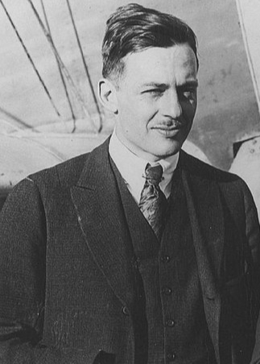
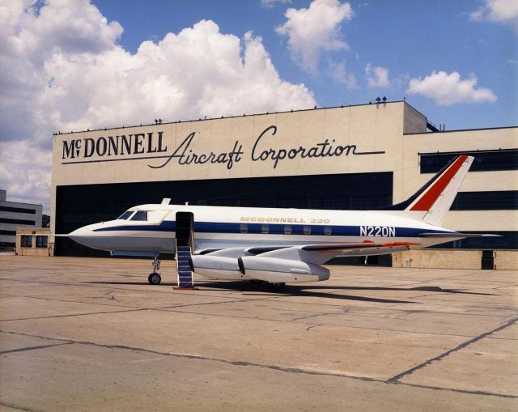
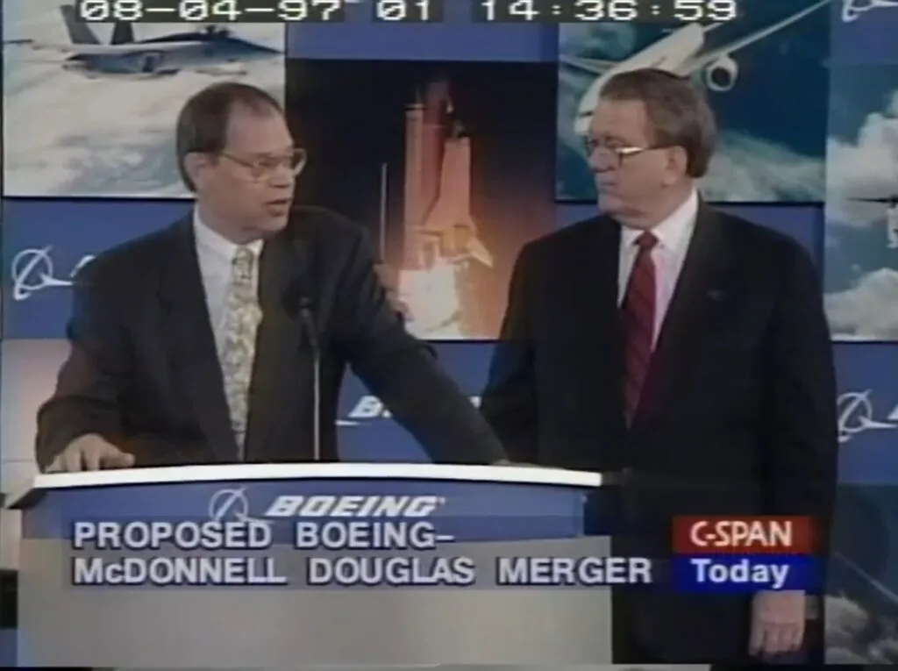

Avant la création de McDonnell Douglas, il existait deux grandes entreprises d’aviation qui allaient marquer l’histoire de l’aéronautique. La première, la Douglas Aircraft Company, fut fondée par l’ingénieur Donald Wills Douglas. Cette société devint célèbre grâce au Douglas DC-3, un avion de ligne révolutionnaire qui transforma le transport aérien civil dans les années 1930. Pendant la Seconde Guerre mondiale, sa version militaire, le C-47 Skytrain, joua un rôle déterminant dans le transport de troupes, de matériel et de ravitaillement. Douglas acquit alors une réputation mondiale et devint l’un des constructeurs les plus influents de son temps.
La seconde, la McDonnell Aircraft Corporation, vit le jour sous l’impulsion de James Smith McDonnell. Contrairement à Douglas, McDonnell se spécialisa dès le départ dans les avions militaires à réaction, produits pour l’United States Air Force et l’United States Navy. Ses chasseurs et appareils d’entraînement contribuèrent à l’essor de l’aviation militaire américaine durant et après la guerre.
En 1967, ces deux entreprises décidèrent de fusionner afin d’unir leurs compétences respectives. Douglas apportait son expérience dans les avions civils, tandis que McDonnell se distinguait par ses avancées dans le domaine militaire. La nouvelle société prit le nom de McDonnell Douglas Corporation et installa son siège social à Saint-Louis (Missouri). Cette fusion permit de créer un acteur aéronautique majeur, capable de rivaliser avec ses concurrents nationaux et internationaux.
Dans les années 1970, McDonnell Douglas connut de grands succès dans le domaine militaire grâce au développement du F-15 Eagle, encore utilisé de nos jours par plusieurs forces aériennes, ainsi qu’au F/A-18 Hornet, devenu l’un des piliers de l’aviation embarquée sur porte-avions. Du côté civil, l’entreprise lança le DC-10, un gros avion triréacteur, concurrent direct du Boeing 747. Bien qu’innovant, il connut plusieurs accidents au début de sa carrière, ce qui nuisit à sa réputation.
Dans les années 1980, McDonnell Douglas poursuivit son développement en produisant de nouveaux avions civils comme la série MD-80, qui rencontra un succès notable. L’entreprise diversifia également ses activités en fabriquant des hélicoptères et participa à plusieurs programmes spatiaux américains, notamment avec la Delta II, utilisée pour le lancement de satellites et de missions scientifiques.
Dans les années 1990, la société rencontra de sérieuses difficultés. Ses nouveaux modèles civils comme le MD-11 ou le MD-90 se vendirent mal face à la concurrence d’Airbus et de Boeing. McDonnell Douglas perdit progressivement du terrain, aussi bien sur le marché civil que militaire. En 1996, l’entreprise annonça son rapprochement avec Boeing afin d’assurer sa survie.
En 1997, la fusion fut officialisée : McDonnell Douglas disparut en tant qu’entité indépendante et ses programmes furent intégrés à ceux de Boeing. Cette opération fit de Boeing le premier constructeur aéronautique mondial et marqua la fin d’une ère pour McDonnell Douglas, dont l’héritage technologique continue néanmoins d’influencer l’industrie aéronautique et spatiale. (Source: Vikidia)

Donald W. Douglas, fondateur de la Douglas Aircraft Company (Wikipedia)

La McDonnell Aircraft Corporation (Plane + Pilot Magazine)

Illustration de la fusion Boeing-McDonnell Douglas